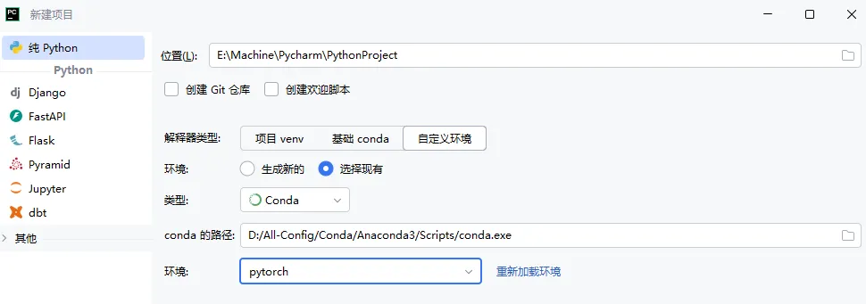
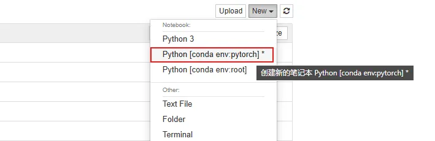
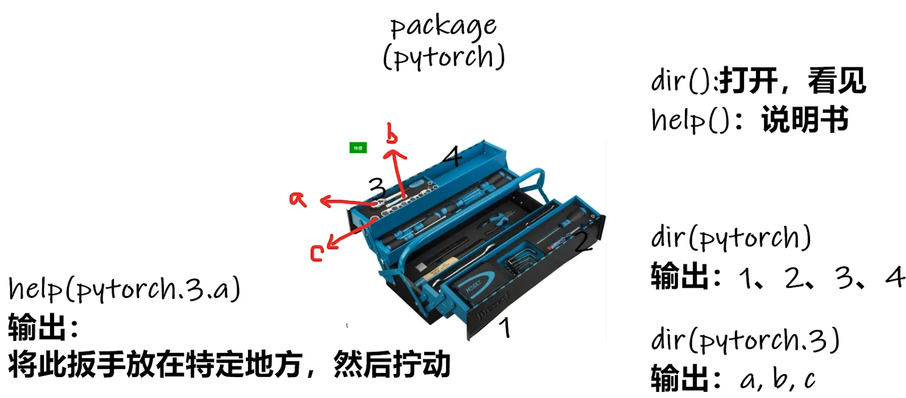
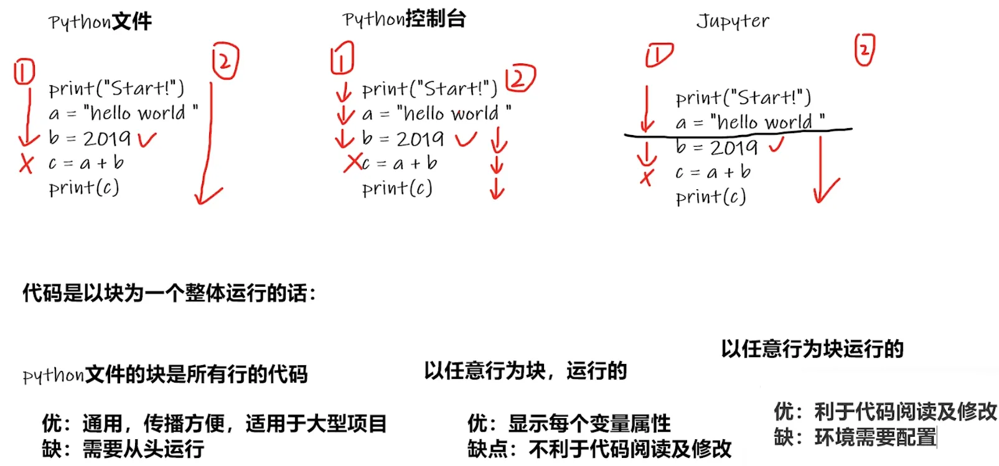

教程视频见 B 站 up 主 小土堆
第 01 讲 配置📝
1.1 基本环境
1.1.1 Anaconda
安装当前最新版 Anaconda，安装时记好自己的 安装路径
| Anaconda | 链接 |
|---|---|
| 当前 | https://www.anaconda.com/download/success |
| 其他 | https://repo.anaconda.com |
也许，你之后会遇到不同的项目，需要使用到不同版本的环境
比如这个项目要用到 pytorch 0.4，另一个项目要用到 pytorch 1.0
Anaconda 集成的 conda 就能够解决这个问题
它可以创造出两个屋子相互隔离，一个屋子放 0.4 版本，一个屋子放 1.0 版本。
# 启动Anaconda Prompt后，我们首先使用conda指令创建一个屋子，叫做pytorch
conda create -n pytorch python=3.6
# conda 指调用conda包
# create 创建的意思
# -n 指后面的名字
# pytorch 即名字(可以更改成自己喜欢的)
# python=3.6 指创建的屋子为python3.6版本
# 激活「pytorch」这个屋子
conda activate pytorch
# 查看「pytorch」中的包列表，目前还无pytorch包，需要安装
pip list
1.1.2 PyTorch
有显卡参考 cuda 版本选择 (无显卡选择 CPU 版本)，选择后复制相应指令
| PyTorch | 链接 |
|---|---|
| 当前 | https://pytorch.org/ |
| 文档 | https://pytorch.org/docs/stable/index.html |
# GPU版
pip3 install torch torchvision torchaudio --index-url https://download.pytorch.org/whl/cu118
# CPU版
pip3 install torch torchvision torchaudio
# 测试PyTorch
#1(pytorch) C:\Users\user
pip list
#2(pytorch) C:\Users\user
python
···
>>> import torch
>>> torch.cuda.is_available() #检查GPU是否可以被Pytorch使用
True
1.2 基本工具
1.2.1 PyCharm
安装当前最新版 PyCharm 专业版 https://www.jetbrains.com/pycharm/download
新建项目 ： 「自定义环境」 -> 「选择现有」 -> 「Conda」 -> 「conda.exe 路径」 -> 选择创建的 pytorch

# Python 控制台 可以输入指令检测是否成功导入Conda的环境
import torch
torch.cuda.is_available()
# PyCharm 终端 不显示当前环境「pytorch」
解决办法：「设置」->「工具 - 终端」-> 把 「Shell 路径」 修改为 「cmd.exe」
1.2.2 Jupyter
# 进入「pytorch」环境
conda activate pytorch
# 通过这个指令就可以安装好Jupyter
conda install nb_conda
# 在pytorch中启动Jupyter
jupyter notebook
新建项目： 「New」 -> 「conda 的 pytorch 环境」

# Jupyter Notebook 测试
import torch
torch.cuda.is_available()
针对于 ssh 服务器的情况下
#服务器上启动 Jupyter Notebook(指定了端口)
##--no-browser是 Jupyter Notebook 等命令行工具的一个启动参数，含义是启动服务器时不自动在本地主机打开浏览器
jupyter notebook --no-browser --port=8888
#在你的本地电脑上做 SSH 端口转发
ssh -L 8888:localhost:8888 cnb@10.1.0.100 #cnb@10.1.0.100是服务器的地址加用户名
#本地浏览器访问
http://localhost:8888/?token=xxxxxx
1.2.3 两个函数
TIP - 查看帮助：PyCharm 中使用 「ctrl+ 鼠标移动」 Jupyter 中使用 「Name+??」 - 查看参数：PyCharm 中使用 「ctrl+P」
| 函数 | 功能 |
|---|---|
| dir( ) | 能让我们知道工具箱、工具箱中的分隔区有什么东西 |
| help( ) | 能让我们知道每个工具是如何使用 |

# 导入 torch
import torch
# dir()
dir(torch)
dir(torch.cuda)
dir(torch.cuda.is_available)
# help()
help(torch.cuda.is_available)
1.2.4 工具对比
